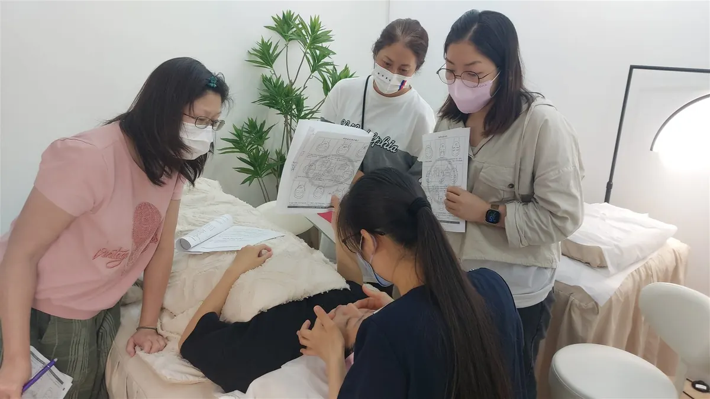
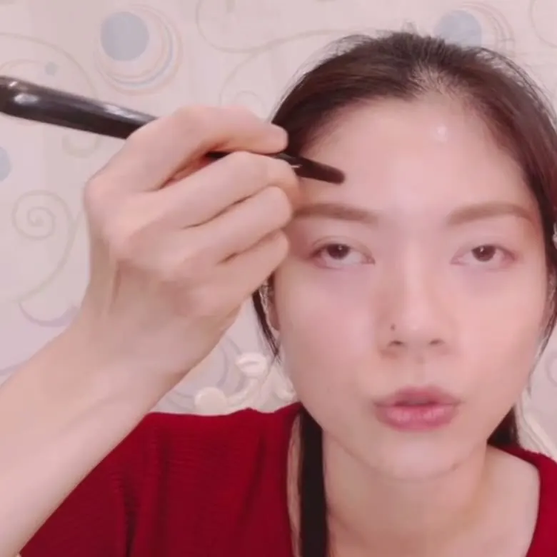

The Bojin Journal · Eyes & Brows
Heavy, Low Brows? Why They Sit Lower and What Helps

Your brows have settled lower, and it isn’t your imagination. The brow crowds the upper eyelid, and your face reads as tired even on a morning when you feel fine.
Brows usually sit lower for two reasons at once: a forehead that holds tension all day, and a brow area that loses some firmness with age. Gentle self-care about twice a week, about a minute per side in light circles just above the brow, can help the area feel lighter and look a little more open for a while. It won’t lift a brow that has settled with age. A brow that drops suddenly or on one side needs a doctor. This is self-care, not medical care.
Why brows sit lower and feel heavier
First, the forehead is one of the hardest-working areas of your face. You raise your brows to see, to concentrate and to react, hundreds of times a day, and the forehead muscle stays a little clenched without you noticing. Screens add to it. The American Academy of Ophthalmology notes that people blink about 15 times a minute normally, but only about 5 to 7 times a minute at a screen (AAO), and a strained, staring face tends to hold the brows and forehead tight.
Second, the brow area loses a little of its firmness and bounce with age. When the brow drifts lower, it sits closer to the lash line, and the eye looks smaller and more hooded than it once did.
None of this is your fault. Women tell me all the time they thought they were the only one watching their brows sink. You aren’t.
Low brows, heavy brows or hooded lids?
These overlap, but they aren’t the same, and only some of them respond to self-care:
| What you notice | What it usually is | Can self-care help? |
|---|---|---|
| Brows that have always sat low | Bone and brow shape | No; that’s structure |
| Brows that feel heavier by evening | Forehead and brow tension | Yes, gently and for a while |
| A fold of skin resting on the upper lid | Hooded lids | A little; see the hooded eyelids guide |
| A brow or lid that dropped suddenly, or on one side | Something to get checked | No; see a doctor right away |
Habits that weigh the brows down
- Lifting your brows to read. If you raise your brows to see small print, it may be time for an eye exam; your forehead shouldn’t be doing your glasses’ job.
- Frowning while you concentrate. The muscle between your brows pulls them together and down. Notice it during a hard email and let it go.
- Staring at a screen without breaks. Every so often, look away at something far off and blink a few times.
- Carrying stress in your forehead. A forehead that’s tight by evening is common. A slow exhale with your forehead softened is a good reset.

A 10-second brow check
Stand at a mirror in even light and look straight ahead with your face relaxed.
- Compare the two sides. Is one brow a little lower, or does one upper lid look heavier? If so, start on that side.
- Raise your brows, then let go. Does your forehead drop right back, or does it stay a little lifted and tight? Staying lifted means the forehead is holding.
One honest note: fingertips, and most home tools, mostly move the top layer of skin, a millimeter or two deep. In my classes, a forehead that tightens again soon after a session is often being pulled from further back, by the scalp and the base of the skull. That’s why the full method works in a set order.
What can help, honestly
| Approach | What it works on | What to expect |
|---|---|---|
| Brow makeup and serums | How the brows look | A visual change while you wear it |
| Gentle self-care (fingertips or a bojin stick) | Forehead and brow tension | A lighter, slightly more open look for a while; about twice a week |
| Changing the habits above | How much tension you build up | Less holding over time; costs nothing |
| Seeing a doctor or dermatologist | Structure, sudden changes, medical options | A professional assessment of what’s right for you |
Bojin is a method, not a stronger gua sha: the order you work in, the angle you hold and the exact spot, at a comfortable pressure. You can start with your fingertips or the gua sha stone you already own.
One gentle line tonight
This is the same step Yu-Ting shows in the free demo. With a little cream on your fingertips, start just above the inner end of one brow. Make small, light circles along the brow bone, just above the brow, moving out to the tail. Lift off at the tail and return to the start. Three slow passes, about a minute for that side, then the other side. Stay on the bone above the brow and never on the eyelid.
“This step isn’t hard. Most students get it right; the only difference is the size of their circles. You want them in between: not too big, not too small.”Yu-Ting Lan, on this step
See this line drawn on a face on the Eyes & Brows guide. It’s the first step of the eye routine; the rest of the eye area, in order, is taught in the course.
Watch the brow area up close
A short clip of Yu-Ting working the brow area with a supporting hand, without pulling the eyelid. It’s a preview to watch, not a complete routine.
Honest expectations, and a safety note
Done about twice a week, many women notice the brow area feels lighter and less tight and looks a little more open and rested, especially in the morning. That’s gentle and temporary; it fades if you stop. This isn’t a brow lift. It won’t change your anatomy, smooth out lines, or hold up a brow that has settled with age.
Quick answers
Why do my eyebrows look lower than they used to?
Usually two things at once: a forehead that holds tension all day, and a brow area that loses some firmness with age. The brow settles closer to the lash line, so the eye looks smaller and more tired.
Can bojin lift my brows?
Not the way a cosmetic procedure would. It can't change your anatomy or hold up a brow that has settled with age. It can ease the forehead and brow tension you're holding, so the area feels lighter and looks a little more open for a while.
How often should I work on my brows?
About twice a week, about a minute per side, with rest days between. More often isn't better; skin needs time to recover between sessions.
Why do my brows look heavier in the morning?
Many faces look a little puffier on waking, and a forehead that held tension overnight can wake up tight. It usually eases as the day starts. If one side looks different from the other and that's new for you, mention it to your doctor.
When should a drooping brow be checked by a doctor?
If a brow or eyelid drops suddenly, droops on only one side, or comes with pain, numbness, weakness or changes in vision, see a doctor right away rather than reaching for a face tool.
See the first eye-area step up close
In the free 1:18 demo, Yu-Ting works the first step of the eye routine, just above the brow, at real speed. The rest of the eye area comes later, in the course. Watch her pressure and pace, then use the same on your own brows.
Watch the free 1:18 demoPart of the Eyes & Brows guide: a 10-second check, the starting route, and related guides for this area.
Yu-Ting Lan is a Taiwan-based international bojin instructor and the founder of Héhé Studio. She has taught her bojin method to more than a thousand students, from complete beginners to grandmothers, across Taiwan, Hong Kong and Malaysia.